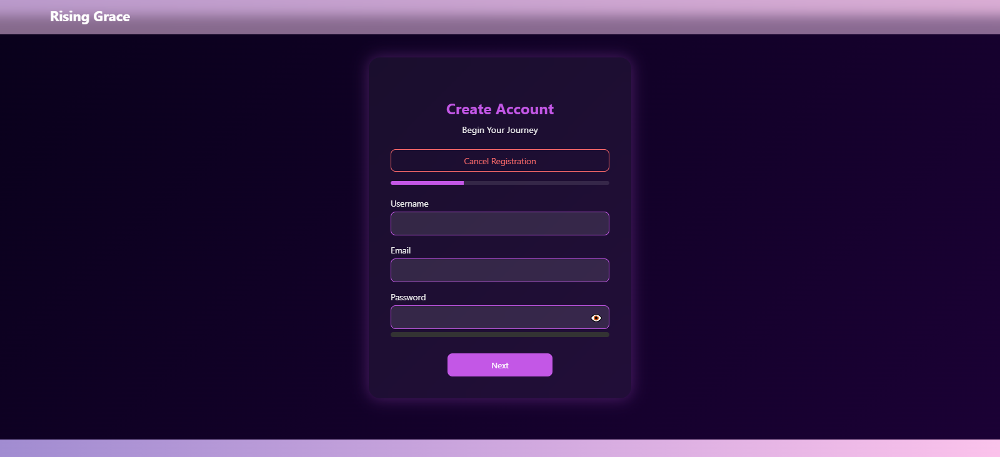

Landing Page / Brand Entry

Introduces the coaching platform with branded navigation and welcoming hero design.
Private full-stack coaching platform showcase built with Node.js, Express, MongoDB, JWT authentication, Stripe, Calendly, Google Sheets reporting, and A.I. monitoring.
This portfolio version uses screenshots and curated code explanations only. It does not expose real client data, production credentials, live Stripe keys, or private deployment details.
Introduces the coaching platform with branded navigation and welcoming hero design.

JWT-based authentication entry point with password visibility and UI validation support.

Guides users through account creation and onboarding before protected app features.

Collects client readiness information using text responses and 1–10 scale inputs.

Demonstrates a payment-gated scheduling workflow using Stripe-style checkout logic.

Centralizes users, sessions, security events, and client history for admin review.

Shows security monitoring, failed-login tracking, readiness indicators, and admin visibility.